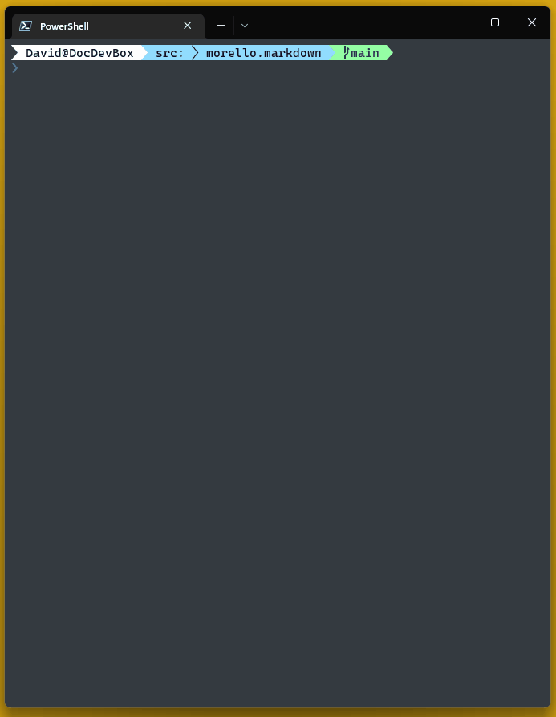

Markdown.Cli
md-cli is a command line client that converts markdown to formatted text.
Pipe or pass file paths and/or markdown.
Call md-cli --help for full instructions.

Markdown.Console
Markdown.Console is a .Net library that powers md-cli.
using Morello;
// Pretty print markdown in your application
MarkdownConsole.WriteLine("Markdown printed in _your_ terminal");